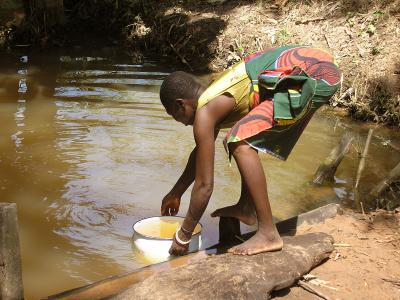

The Issue
As water is such a significant item for humanity, it has presented multiple challenges in civilisations around the world, and the need for water sanitation is one of them. A lack of sanitary water creates several problems, many of which we may not even consider. As such, water sanitation in the world today is an extremely important issue which many groups around the world deal with on a daily basis.
| Organizations | Methods | Consequences |
|---|---|---|

|
 |
Learn More
Get involved in the fight for clean water. Get information on the methods of water sanitation, the consequences of having unsanitary water, and the big names in sanitation today.
Quick Tips
Get involved in the fight for clean water. Get information on the methods of water sanitation, the consequences of having unsanitary water, and the big names in sanitation today.